Descubre diferentes sistemas planetarios, explora los planetas que los conforman y conoce diversos detalles.
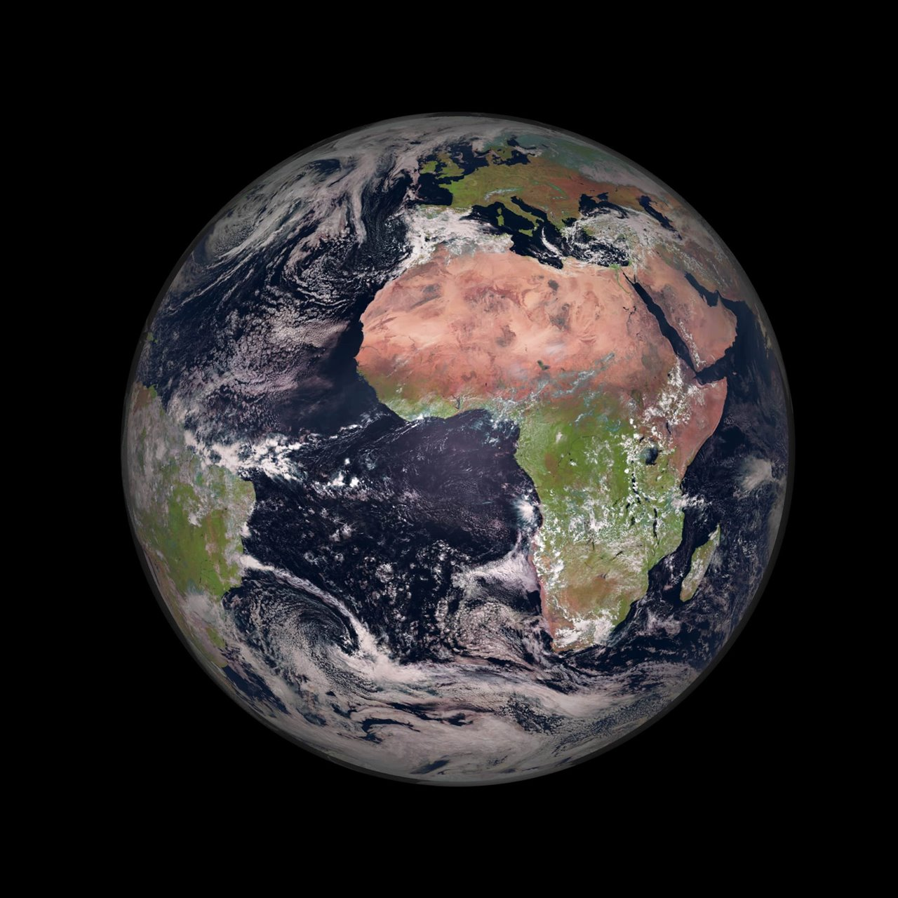
La Tierra es el tercer planeta del Sistema Solar y el único planeta conocido con vida.
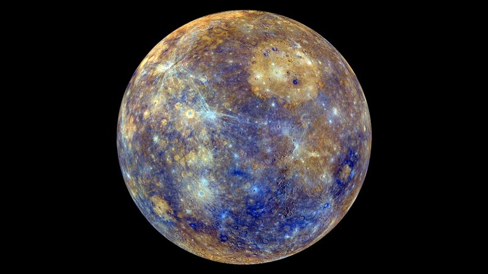
Mercurio es el planeta más cercano al Sol y el más pequeño del Sistema Solar.
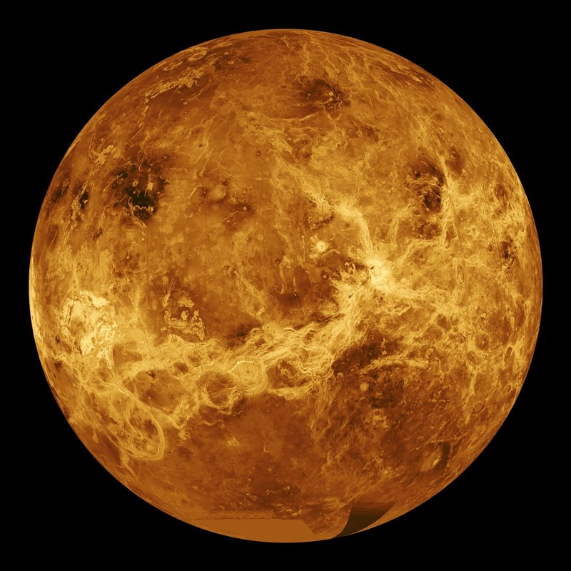
Venus es el segundo planeta del Sistema Solar y el más caliente debido a su densa atmósfera.
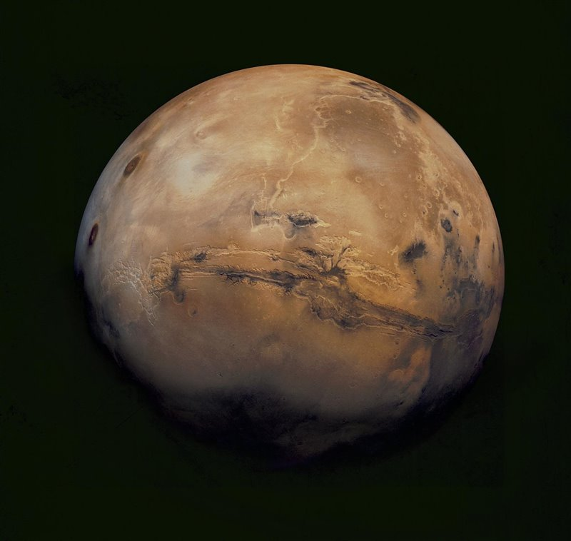
Marte es el cuarto planeta del Sistema Solar y es conocido como el planeta rojo.
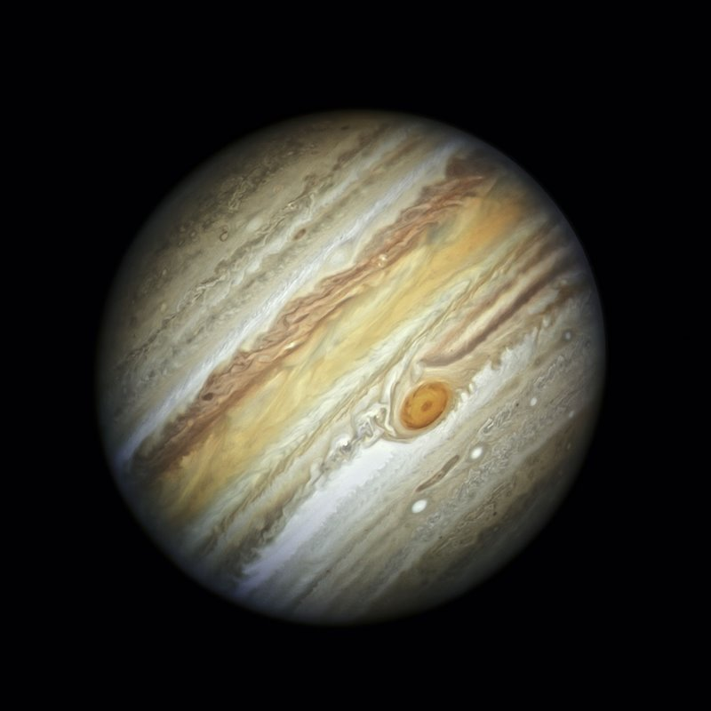
Júpiter es el quinto planeta del Sistema Solar y el más grande de todos.
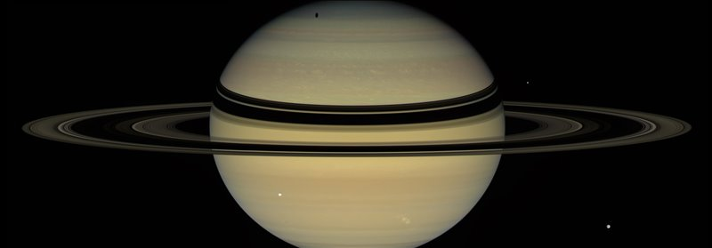
Saturno es el sexto planeta del Sistema Solar y destaca por sus impresionantes anillos.
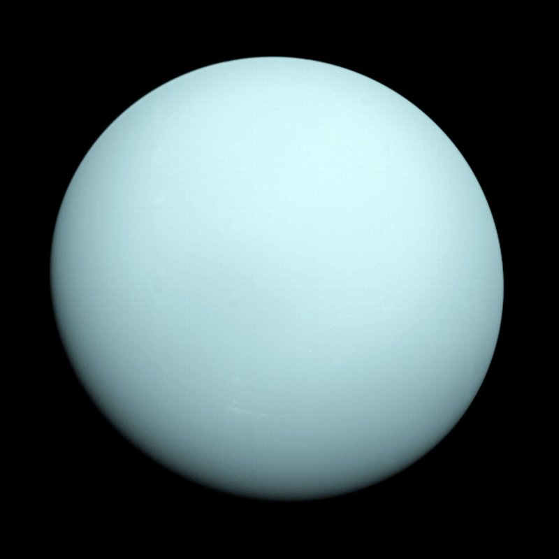
Urano es el séptimo planeta del Sistema Solar, un gigante helado de color azul verdoso.
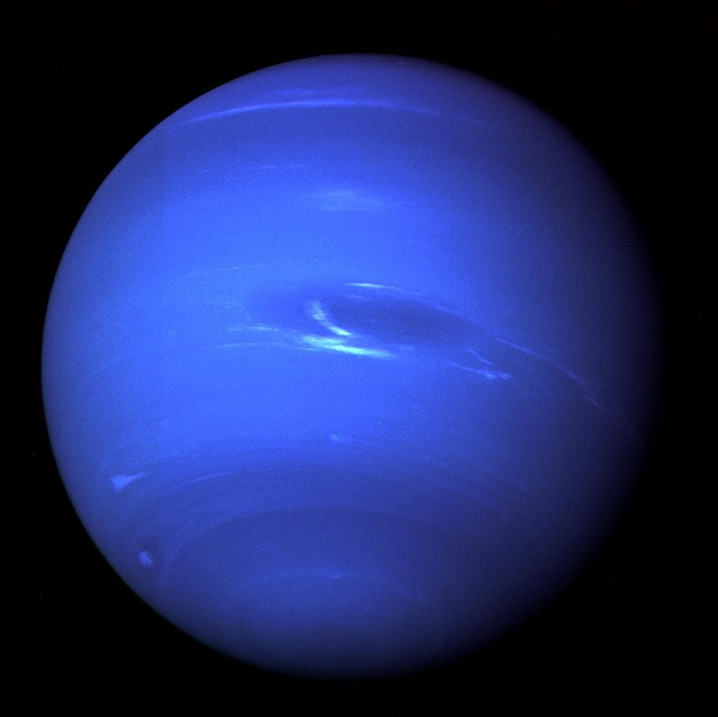
Neptuno es el octavo planeta del Sistema Solar y el más lejano del Sol.
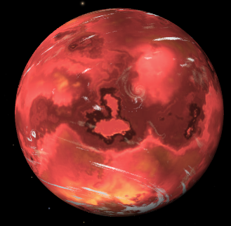
Es uno de los planetas más cercanos a la estrella Kepler-90 y tiene un tamaño pequeño.
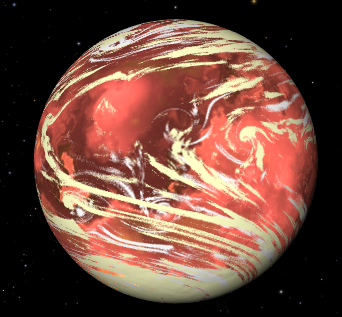
Es un planeta que orbita cerca de su estrella y forma parte de la región interior del sistema.
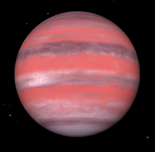
Es un exoplaneta que orbita la estrella Kepler-90 en un sistema de ocho planetas conocidos.
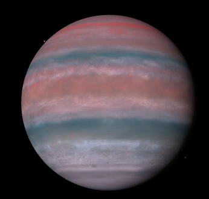
Es uno de los planetas de la zona intermedia del sistema planetario Kepler-90.
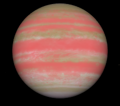
Es un exoplaneta que se encuentra más alejado de su estrella que los planetas interiores.
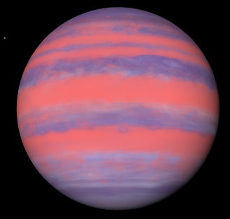
Es un planeta gigante ubicado en la región exterior del sistema Kepler-90.
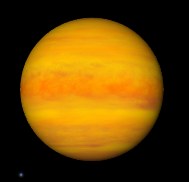
Es un planeta gigante y el más alejado de la estrella entre los ocho conocidos.
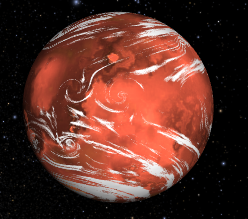
Es un planeta rocoso muy caliente que completa una órbita en aproximadamente 14,4 días.